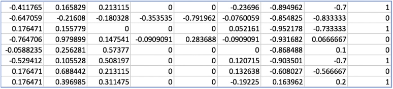

Logistic Regression
코딩에 앞서 개념 다지기
1. Sigmoid function
2. cost function for logistic regression
3. cost function의 미분
Training Data
Training에 앞서 어떤 형식의 training data를 사용할 것인지 살펴보기
# Training data set
x_data = [[1, 2], [2, 3], [3, 1], [4, 3], [5, 3], [6, 2]]
y_data = [[0], [0], [0], [1], [1], [1]] # y값은 항상 0 또는 1
# placeholders for a tensor that will be always fed.
X = tf.placeholder(tf.float32, shape=[None, 2])
Y = tf.placeholder(tf.float32, shape=[None, 1])( full code ) logistic_regression.py
# Lab 5 Logistic Regression Classifier
import tensorflow as tf
tf.set_random_seed(777) # for reproducibility
x_data = [[1, 2], [2, 3], [3, 1], [4, 3], [5, 3], [6, 2]]
y_data = [[0], [0], [0], [1], [1], [1]]
# placeholders for a tensor that will be always fed.
X = tf.placeholder(tf.float32, shape=[None, 2])
Y = tf.placeholder(tf.float32, shape=[None, 1])
W = tf.Variable(tf.random_normal([2, 1]), name='weight')
b = tf.Variable(tf.random_normal([1]), name='bias')
# W = tf.random_normal()에서 앞의 2는 들어오는 X feature의 개수,
# 뒤의 1는 나가는 Y feature의 개수
# b(bias)는 항상 나가는 값(=Y)의 개수에 맞춰야한다.
# Hypothesis using sigmoid: tf.div(1., 1. + tf.exp(tf.matmul(X, W))) 1번식 적용
hypothesis = tf.sigmoid(tf.matmul(X, W) + b)
# 위의 각주대로 수식 그대로 직접 구현해도 무관
# cost/loss function 2번식 적용
cost = -tf.reduce_mean(Y * tf.log(hypothesis) + (1 - Y) *
tf.log(1 - hypothesis))
# 3번식 적용
train = tf.train.GradientDescentOptimizer(learning_rate=0.01).minimize(cost)
# Accuracy computation
# True if hypothesis>0.5 else False ---> 0.5를 threshold로 쓰겠다는 뜻
predicted = tf.cast(hypothesis > 0.5, dtype=tf.float32)
# float32 type을 0 / 1 casting
accuracy = tf.reduce_mean(tf.cast(tf.equal(predicted, Y), dtype=tf.float32))
# Launch graph
with tf.Session() as sess:
# Initialize TensorFlow variables
sess.run(tf.global_variables_initializer())
for step in range(10001):
cost_val, _ = sess.run([cost, train], feed_dict={X: x_data, Y: y_data})
if step % 200 == 0:
print(step, cost_val)
# Accuracy report
h, c, a = sess.run([hypothesis, predicted, accuracy],
feed_dict={X: x_data, Y: y_data})
print("\nHypothesis: ", h, "\nCorrect (Y): ", c, "\nAccuracy: ", a)Train the model (학습 모델 구체화 단계)
# Launch graph
with tf.Session() as sess:
# Initialize TensorFlow variables
sess.run(tf.global_variables_initializer())
for step in range(10001):
cost_val, _ = sess.run([cost, train], feed_dict={X: x_data, Y: y_data})
# _ 변수는 train관련 정보가 담기는데 현재 우리에겐 관심사항 X
if step % 200 == 0:
print(step, cost_val)
# Accuracy report
h, c, a = sess.run([hypothesis, predicted, accuracy],
feed_dict={X: x_data, Y: y_data})
print("\nHypothesis: ", h, "\nCorrect (Y): ", c, "\nAccuracy: ", a)결과 창
# result
0 1.7307831
200 0.5715118
400 0.5074139
600 0.4718242
800 0.44758487
...
9000 0.16165249
9200 0.15906553
9400 0.1565599
9600 0.15413196
9800 0.15177834
10000 0.1494956
Hypothesis: [[0.03074028]
[0.15884677]
[0.30486736]
[0.7813819 ]
[0.93957496]
[0.9801688 ]]
Correct (Y): [[0.]
[0.]
[0.]
[1.]
[1.]
[1.]]
Accuracy: 1.0Classifying diabets 당뇨병 진단 예제
data-03-diabetes.csv
[결과] : 마지막 열(column) 당뇨병으로 진단됨 = 1
코드에 앞서 input data 분석
xy = np.loadtxt('data-03-diabetes.csv', delimmiter=',', dtype=np.float32)
x_data = xy[:, 0:-1] # 모든 column 에서 index 0부터 마지막index - 1 까지의 값
y_data = xy[:, [-1]] # 모든 column 에서 마지막index 값
# np array형의 slicing을 까먹었다면 이곳을 클릭logistic_regression_diabets.py
# Lab 5 Logistic Regression Classifier
import tensorflow as tf
import numpy as np
tf.set_random_seed(777) # for reproducibility
xy = np.loadtxt('data-03-diabetes.csv', delimiter=',', dtype=np.float32)
x_data = xy[:, 0:-1]
y_data = xy[:, [-1]]
print(x_data.shape, y_data.shape)
# placeholders for a tensor that will be always fed.
X = tf.placeholder(tf.float32, shape=[None, 8])
Y = tf.placeholder(tf.float32, shape=[None, 1])
W = tf.Variable(tf.random_normal([8, 1]), name='weight')
b = tf.Variable(tf.random_normal([1]), name='bias')
# Hypothesis using sigmoid: tf.div(1., 1. + tf.exp(tf.matmul(X, W)))
hypothesis = tf.sigmoid(tf.matmul(X, W) + b)
# cost/loss function
cost = -tf.reduce_mean(Y * tf.log(hypothesis) + (1 - Y) *
tf.log(1 - hypothesis))
train = tf.train.GradientDescentOptimizer(learning_rate=0.01).minimize(cost)
# Accuracy computation
# True if hypothesis>0.5 else False
predicted = tf.cast(hypothesis > 0.5, dtype=tf.float32)
accuracy = tf.reduce_mean(tf.cast(tf.equal(predicted, Y), dtype=tf.float32))
# Launch graph
with tf.Session() as sess:
# Initialize TensorFlow variables
sess.run(tf.global_variables_initializer())
for step in range(10001):
cost_val, _ = sess.run([cost, train], feed_dict={X: x_data, Y: y_data})
if step % 200 == 0:
print(step, cost_val)
# Accuracy report
h, c, a = sess.run([hypothesis, predicted, accuracy],
feed_dict={X: x_data, Y: y_data})
print("\nHypothesis: ", h, "\nCorrect (Y): ", c, "\nAccuracy: ", a)결과 창
# result
0 0.82793975
200 0.75518084
400 0.7263554
600 0.70517915
800 0.6866307
1000 0.669853
...
9200 0.4934804
9400 0.49275032
9600 0.49205622
9800 0.49139577
10000 0.4907668
...
[1.]
[1.]
[1.]
[1.]]
Accuracy: 0.7628459Exercise
-
CSV reading using tf.decode_csv
tensorflow의 decode_csv모듈 사용해보기
-
Try other classification data from Kaggle
Kaggle 웹 사이트에 가서 여러가지 데이터를 다운받아 classify 실행해보기